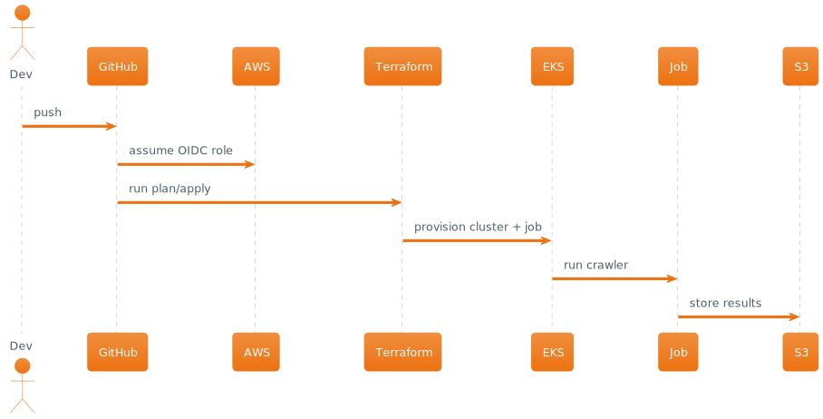

Infrastructure as Code
Dévald Tari
2025-06-06 Fri 13:00
Welcome
Welcome, and thank you for the opportunity to present my Infrastructure as Code demo.
This solution is structured with a client-facing mindset, prioritizing clarity, automation, scalability, and practical consulting value.

Dévald Tari
Problem Overview
Task Goals
The client expects a modular, maintainable, and cloud-native solution to run a one-time web crawler job in AWS.
This solution follows infrastructure-as-code best practices and is presented in the same way I would deliver it to a client.
Requirements Recap
- Use
terraformand optionallyterragrunt - Automate provisioning via a CI/CD pipeline
- Store code in Git (mono- or multi-repo)
- Run a simple web crawler
- Output data to an S3 bucket
- Deploy the job to EKS in AWS
Architecture at a Glance
High-Level Diagram

Flow Summary
- Git push triggers GitHub Actions
- CI pipeline assumes AWS role using OIDC
- Terraform (via Terragrunt) provisions infra
- EKS cluster launches one-shot crawler job
- Job uploads result to S3
Infrastructure Management
Terragrunt Structure
The codebase is split into a reusable module layer and a live/ layer using Terragrunt:
live/<env>/<region>/<component>- Each folder auto-detects its context
- Module sources are versioned and centralized
Directory layout
.
├── root.hcl
├── live/
│ └── demo/
│ └── eu-central-1/
│ ├── aws-data/
│ ├── vpc-1/
│ ├── eks-1/
│ ├── crawler-job-1/
│ ├── crawler-s3-1/
│ └── github-oidc/
├── modules/
│ ├── aws-data/
│ ├── crawler-job/
│ └── github-oidc/
Root Logic Sample
The root-level Terragrunt configuration dynamically adjusts behavior based on directory structure and account context — making the setup environment- and region-aware without manual repetition.
It includes:
- Path introspection to extract environment, region, and component
- Dynamic S3/DynamoDB backend generation (per account)
- AWS provider configuration with consistent tagging
locals
locals {
path_parts = split("/", path_relative_to_include())
environment = local.path_parts[1]
region = local.path_parts[2]
component = local.path_parts[3]
}
remote state
remote_state {
backend = "s3"
generate = {
path = "backend.tf"
if_exists = "overwrite"
}
config = {
encrypt = true
region = local.region
key = format("%s/terraform.tfstate", path_relative_to_include())
bucket = format("terraform-states-%s", get_aws_account_id())
dynamodb_table = format("terraform-states-%s", get_aws_account_id())
}
}
generate aws provider
generate "provider_aws" {
path = "provider_aws.tf"
if_exists = "overwrite"
contents = <<EOF
provider "aws" {
region = "${local.region}"
default_tags {
tags = {
Environment = "${local.environment}"
Region = "${local.region}"
Component = "${local.component}"
ManagedBy = "terragrunt/terraform"
}
}
}
EOF
}
Continuous Deployment
GitHub Actions
CI/CD is built with GitHub Actions and OpenID Connect:
- No AWS keys are stored
- Roles are assumed securely at runtime
- Terraform apply runs with permissions scoped per environment
Infrastructure Modules
aws-data
The aws-data module centralizes the retrieval of region-specific AWS metadata for consistent use across all other infrastructure modules.
It provides:
data.aws_region→ current AWS region name and descriptiondata.aws_availability_zones→ list of AZ names and zone IDs
This removes duplication, ensures reliability, and keeps modules clean from boilerplate region logic.
The module is easily extendable to include:
data.aws_caller_identity→ to expose AWS account ID and user context
github-oidc
The github-oidc module provisions an IAM role that allows GitHub Actions to securely authenticate to AWS without long-lived access keys.
It configures:
- An IAM role with trust policy for GitHub’s OIDC provider
- Conditions based on GitHub repository and branch (audience/subject)
- Minimal required permissions for Terraform plans and deployments
Benefits:
- Eliminates secrets management in CI
- Strong security posture via short-lived tokens
- Fully GitOps-compatible with auditability
crawler-job
The crawler-job module provisions a one-time Kubernetes Job on an EKS cluster to run a containerized web crawler.
It encapsulates:
- A Kubernetes Job spec using a public or custom Docker image
- Environment variable injection and runtime configuration
- Optional TTL and cleanup behavior
Benefits:
- Decouples application logic from infrastructure logic
- Ensures reproducibility and isolation per crawl run
- Fully integrates with Terraform-based provisioning
Developer Experience
Nix Environment
Using nix develop ensures consistent tools:
terraform,terragrunt,kubectl,awscli- Works identically in CI and on local machines
Local Testing
- The
nix developshell offers a reproducible environment for hands-on work- From there, you can run arbitrary
terragruntcommands (e.g.plan,apply,destroy)
- From there, you can run arbitrary
- Nix apps like:
nix run .#validatenix run .#applycan be run outside thenix developshell as well
Presentation as Code
This presentation was written entirely in Org Mode and exported with ox-reveal to Reveal.js HTML.
- Edited and versioned in Git
- Live-previewed locally in Emacs
- Structured, reproducible, and hackable
- Reflects the same IaC principles presented here
Consulting Value
Business Impact
- Secure, reproducible, modular infrastructure
- Ready to scale to multi-region, multi-account setups
- Aligned with GitOps and compliance needs
Extendability
- Add Fargate support
- Support multiple job types (e.g. periodic, chained workflows)
Summary & Q&A
Recap
- You’ve seen a real-world, production-ready solution
- Security, scalability, and consulting mindset were key